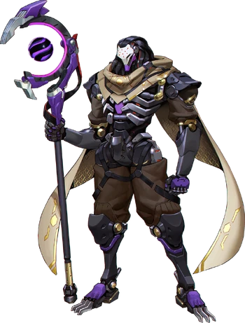

- Reinhardt -
Kasaolo a toujours eu l'âme d'un chevalier servant, prêt à tout pour défendre l'opprimé. C'est pour cela qu'il entretient un lien particulier avec son personnage phare, Reinhardt (En plus, ils ont à peu près le même âge).
Armé de son énorme marteau à réaction et de son bouclier numérique du futur (on le rappelle, face à des armes à feu en tout genre), c'est une véritable muraille en jeu. Capable de charger vers l'ennemi, agitant son marteau dans tous les sens possibles, attendez vous à des combats épiques dignes des plus grands films médiévaux. Il n'hésitera pas à faire cette même démarche à contresens en chargeant vers sa ligne alliée afin de sauver ses équipiers de toute forme d'agression.
Joueur parfois réfléchi, au jeu enthousiaste au vu de ses nombreuses initiatives douteuses, Kasaolo fait trembler toute entité vivante à la lancée de son choc sismique.
- Sait tartiner minutieusement l'écran pour toucher tous les ennemis
- 100% de précision au marteau voire plus
- Temps moyen de levée de bouclier par partie : 3s
- Capable de se cacher en toute circonstance de ses propres soigneurs malgré la taille imposante de son personnage
- Doomfist -
Le tank de cette équipe de Brak'AC est également connu pour être bagarreur dans la vrai vie, officiellement triple champion du Gers de MMA d'oreiller (Discipline de combat Homme contre Polochon). Doomfist est un personnage évident du pool de héros de Kasaolo.
Avec son poing de la taille de Torbjörn (autre personnage du jeu), Kasaolo sait envoyer des crochets à la Mohamed Ali, et faire frissoner l'équipe ennemi au premier regard. Fracasser ses opposants contre les murs ? Ca lui arrive parfois quand il ne se contente pas de les effleurer volontairement.
Il se servira de sa frappe météore pour s'élever dans les airs, puis retomber, en général sur une pauvre mamie au cache-oeil, ou un moine pacifiste.
- Nombre de KO : 1 (lui-même)
- Donne sa vie à CHAQUE combat pour perturber les lignes ennemies
- Il peut sauter très très haut
- Pourcentage de victoires : 0.95% (Résultat inférieur à 1%, un record dont il est l'unique détenteur)

- Ramattra -
Kasaolo aime la paix. Mais parfois, il y a des choses qui l'énervent, l'obligeant à sortir les dents. Ramattra possède donc de nombreux points communs avec lui, moine déchu désormais corrompu par la haine. De plus, son kit possédant à peu près toutes les compétences du jeu honore la polyvalence de Kasaolo dans la vraie vie.
Grâce à son bâton de sorcier robot, capable de faire autant de dégats qu'un fusil d'assaut, sans problèmes liés à la distance, on pourra observer (sous réserve d'être extrêment chanceux) Kasaolo éliminer un ennemi en moins de 2 secondes (mais de par son humilité inconditionnelle, il préfère brider sa puissance, et viser très mal en jouant avec un objet préhistorique : la manette).
En se positionnant convenablement, et en appuyant sur tous les boutons, Kasaolo nous garantit une victoire à 100% en jouant ce personnage, si le tank ennemi ne fait pas la même chose.
- Taux de précision au bâton : 8% (Faut pas lui en vouloir, c'est son premier héros qui demande de viser un peu)
- Temps moyen passé en colère (Forme Némésis) : 10s parce que Kasaolo n'est pas un joueur impulsif
- Capable de retourner une situation désavantageuse en appuyant sur un seul bouton
- Personnages sauvés grâce à sa garde impénétrable : 1 (lui-même encore une fois)